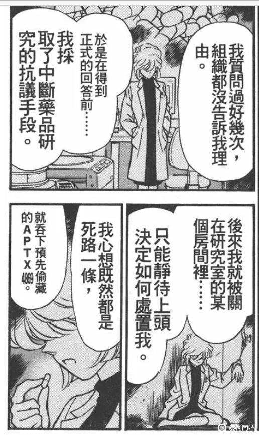
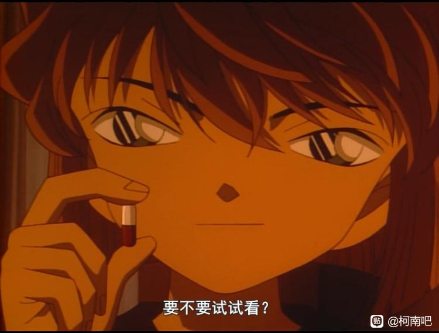
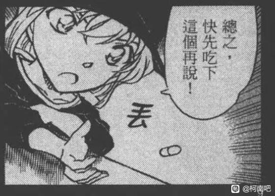
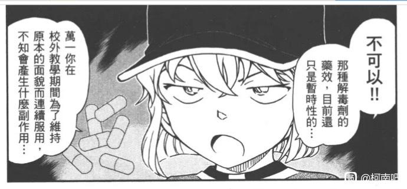
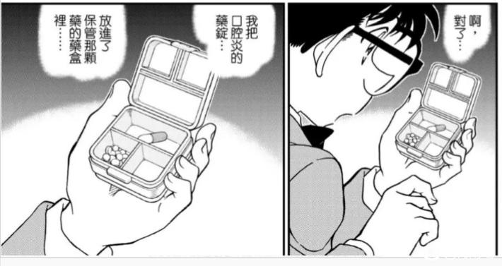

A药和解药的颜色很长时间都没有定论，红白/蓝白/白白都有，直到近几年才确定下来：毒药是红白，解药是蓝白。于是我做了个表，想看看是什么时候定下来两种药的颜色的
先说结论：我认为青山直到2020年《天罚降临的生日派对》才定下来两种药的颜色；动画倒是一直认为毒药是红白，解药的颜色动画组也不确定
关于黑白漫画的颜色判定标准：根据柯南经典皮（红领结是黑色，蓝外套是灰色），我把黑色视为红色，灰色视为蓝色
先说结论：我认为青山直到2020年《天罚降临的生日派对》才定下来两种药的颜色；动画倒是一直认为毒药是红白，解药的颜色动画组也不确定
关于黑白漫画的颜色判定标准：根据柯南经典皮（红领结是黑色，蓝外套是灰色），我把黑色视为红色，灰色视为蓝色
在宫野夫妇接手之前组织做的药
宫野夫妇研发的药
灰原哀复原做出的药
灰原哀想做的药
boss想要的药
宫野夫妇研发的药
灰原哀复原做出的药
灰原哀想做的药
boss想要的药
顶顶辛苦了
云霄飞车杀人事件
漫画是白色胶囊
第一集和《变小的名侦探》是红白色胶囊
剧场版开场白琴酒喂药一直是红白色的胶囊，大家应该都有印象，就不截了
漫画是白色胶囊
第一集和《变小的名侦探》是红白色胶囊
剧场版开场白琴酒喂药一直是红白色的胶囊，大家应该都有印象，就不截了
来自黑衣组织的女子
剧场版开场白也不截了，应该都是红白色的胶囊
剧场版开场白也不截了，应该都是红白色的胶囊

与黑衣组织的再会
动画没有画出胶囊，所以没有对应的动画画面
动画没有画出胶囊，所以没有对应的动画画面
危命的复活
都是红白色的
都是红白色的

 红蓝一定对应的是哀喜欢的红色和柯喜欢的蓝色。
红蓝一定对应的是哀喜欢的红色和柯喜欢的蓝色。有点不喜欢周边总吧哀的周边做成紫色
2024-01-16 22:04 | 8s8p:红蓝混一起不就是紫色卖周边的追求的的是结果罢了
2004年的500话Sunday纪念封面，这个算是蓝绿色吧，我划分为蓝色了，上色的时候可能是为了跟背景的红色区分开（？）
真正想问的事（死罗神）的解药
漫画和动画都是白色
漫画和动画都是白色

伦敦篇的解药
漫画是白色，动画是蓝白色
漫画是白色，动画是蓝白色
逼近灰原秘密的黑影的解药
动画和漫画都是红白色
这里动画还在另外一个格子里画了蓝白色的胶囊，漫画看不清楚盒子里的胶囊的颜色
动画和漫画都是红白色
这里动画还在另外一个格子里画了蓝白色的胶囊，漫画看不清楚盒子里的胶囊的颜色
2024-01-18 15:46 | 雾崎😷:？？？黑白漫画怎么确定是红白还是蓝白？2024-01-18 20:24 | 平者深黑:回复 雾崎😷 :看一楼，我写了。另外看99卷封面颜色确定后的表现方式
列车篇第4话漫画封面上的毒药，红白色
没有对应动画画面
没有对应动画画面
列车篇哀手上拿的解药
漫画是红白色
动画初版是红白色，在2023年的《灰原哀物语》中修正为蓝白色
漫画是红白色
动画初版是红白色，在2023年的《灰原哀物语》中修正为蓝白色
2024-01-18 23:52 | 💥尖峰时刻⚡:好巧，动画基德给青子的是红玫瑰，《侦探vs怪盗》修正为蓝玫瑰
《与17年前相同的现场》里的毒药
漫画和动画都是红白色
漫画和动画都是红白色
挂件篇的解药
漫画和动画都是白色的
漫画和动画都是白色的

红修的解药
漫画没画出来，动画是白色的（应该是参照的挂件篇漫画吧）
漫画没画出来，动画是白色的（应该是参照的挂件篇漫画吧）
代演京极真的毒药
漫画是白色，动画是红白色
漫画是白色，动画是红白色
这就是数据大佬
帮顶
天罚降临的生日派对的解药
这里通过台词明确：解药是蓝白色
漫画可以看出解药和柯南的蓝外套颜色相近
动画也是蓝白色
这里通过台词明确：解药是蓝白色
漫画可以看出解药和柯南的蓝外套颜色相近
动画也是蓝白色

天罚降临的生日派对，贝姐给玛丽喂的毒药
动画和漫画都是红白色
动画和漫画都是红白色
2020年4月，青山在Sunday webry的《青色笔杆》对第一话的留言里提到“真是令人怀念啊～！兰的头发还不是尖的，APTX4869也还是白色胶囊……”
所以这里他应该已经改了设定，APTX4869的颜色已经不是白色了
所以这里他应该已经改了设定，APTX4869的颜色已经不是白色了
99卷的扉页
新一拿的红白色胶囊是毒药，柯南拿的蓝白色胶囊是解药
没有对应动画画面
新一拿的红白色胶囊是毒药，柯南拿的蓝白色胶囊是解药
没有对应动画画面
羽田案的毒药
漫画是红白色，目前还没有动画化
漫画是红白色，目前还没有动画化
黑铁的鱼影，解药是蓝白色
分镜批注写着“解药是蓝白色胶囊”，并且上了色
宫野志保吃下的毒药是红白色
分镜批注写着“解药是蓝白色胶囊”，并且上了色
宫野志保吃下的毒药是红白色
解药是自己手搓的，当然有什么胶囊用什么胶囊啦
胶囊颜色引起我的注意是因为保温杯预赛的一道题
其实动画组在解药的颜色上基本上是按照漫画来的，除了伦敦篇
列车篇解药用了红白色，也是因为漫画就是红白色的，这个“bug”纯属青山的锅
其实动画组在解药的颜色上基本上是按照漫画来的，除了伦敦篇
列车篇解药用了红白色，也是因为漫画就是红白色的，这个“bug”纯属青山的锅
2024-01-16 23:37 | 贴吧用户_Q4eCR5W:太细了吧我的哥！
牛

质量贴顶一顶
哀哀随机批发胶囊壳
dd
出题人来了 好帖顶顶
好帖顶顶
当时出这道题的时候是国内《黑铁的神秘列车》刚刚正版放出，对于里面修正后的蓝白色解药特写印象深刻。
原版动画和总集篇做出修改的唯一原因，就是1047话通过台词确定的解药颜色，可以说就是基于这个知识点出的整道题目。感谢楼主更深入的考究。
好帖顶顶当时出这道题的时候是国内《黑铁的神秘列车》刚刚正版放出，对于里面修正后的蓝白色解药特写印象深刻。
原版动画和总集篇做出修改的唯一原因，就是1047话通过台词确定的解药颜色，可以说就是基于这个知识点出的整道题目。感谢楼主更深入的考究。
事到如今解药真的还算是解药么？那也是终结掉江户川柯南的毒药罢了，
dd
其实药是私人定制，买到什么颜色胶囊就用什么颜色呗，但是73最后还是确定了固定颜色方案，要不是胶囊的象征性考虑要不是周边印象考虑
从解药胶囊的颜色展开分析，也是个不错的角度。因为青山参与的m26直接将临时解药颜色标识出来了，这应该不是闲笔。
在m26之前我还真的没从解药颜色解读出什么，因为就像楼主罗列的，解药颜色比较混乱，有全白的也有非全白的。漫画只有黑白对比，实在很难看出是红白还是蓝白。动画组有乱改漫画的前科，说实话很难相信他们画的解药颜色。
但是m26写明了解药是蓝白色，再结合青山认证的柯南经典皮肤（蓝白小西装和红领结），感觉就像一种象征，强调解药的“临时属性”（吃后必然变回柯南）。毕竟柯南藏下来的解药也是一次性的，不是最终版变大解药。
当然，从人物代表色看的话，可能会有人纠结新一也穿帝丹蓝色校服，基德也是蓝白套装等等。但考虑到作品名字叫《名侦探柯南》且a药贯穿作品始终，那么作为a药的临时解药，我觉得更大概率跟主角柯南对应。
有人用快青红蓝线的梗来分析解药，我觉得不是不行。因为除了全白，非全白的解药颜色基本也就出现过蓝白和红白。而剧场版早期借用了青山亲儿子（快斗）恋爱梗的是新兰，那么临时解药和最终版解药再玩一波红蓝线梗，要么是新兰结局来个借用梗的call back，要么是柯哀结局颠覆了早期剧场版。
在m26之前我还真的没从解药颜色解读出什么，因为就像楼主罗列的，解药颜色比较混乱，有全白的也有非全白的。漫画只有黑白对比，实在很难看出是红白还是蓝白。动画组有乱改漫画的前科，说实话很难相信他们画的解药颜色。
但是m26写明了解药是蓝白色，再结合青山认证的柯南经典皮肤（蓝白小西装和红领结），感觉就像一种象征，强调解药的“临时属性”（吃后必然变回柯南）。毕竟柯南藏下来的解药也是一次性的，不是最终版变大解药。
当然，从人物代表色看的话，可能会有人纠结新一也穿帝丹蓝色校服，基德也是蓝白套装等等。但考虑到作品名字叫《名侦探柯南》且a药贯穿作品始终，那么作为a药的临时解药，我觉得更大概率跟主角柯南对应。
有人用快青红蓝线的梗来分析解药，我觉得不是不行。因为除了全白，非全白的解药颜色基本也就出现过蓝白和红白。而剧场版早期借用了青山亲儿子（快斗）恋爱梗的是新兰，那么临时解药和最终版解药再玩一波红蓝线梗，要么是新兰结局来个借用梗的call back，要么是柯哀结局颠覆了早期剧场版。
其实我奇怪，反正胶囊外壳没药效，而且灰原哀也明说了没资料原来的药制不出来，那外壳应该五花八门吧
2024-01-27 12:14 | 贴吧用户_GSyWRZW:可这是侦探动画，应该是故意区分
补一个，还是《天罚降临的生日派对》，台词明确A药是红白色胶囊